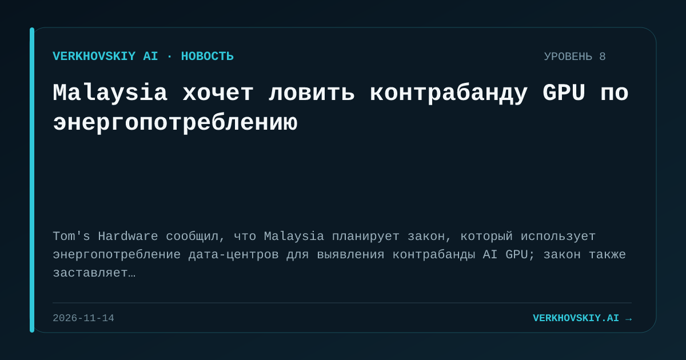

Malaysia хочет ловить контрабанду GPU по энергопотреблению
Tom's Hardware сообщил, что Malaysia планирует закон, который использует энергопотребление дата-центров для выявления контрабанды AI GPU; закон также заставляет операторов платить за неиспользованную электрическую мощность.